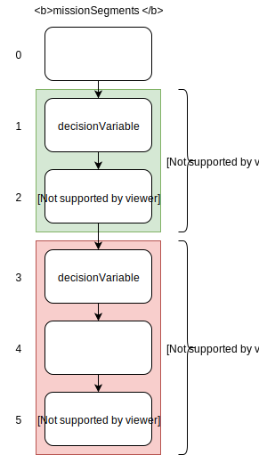
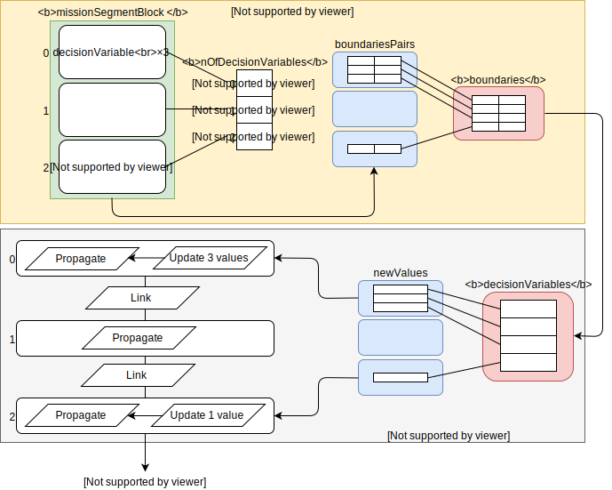
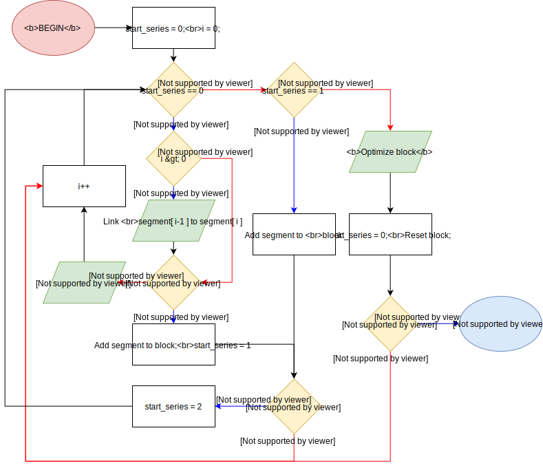

Mission Linker¶
What is the Mission Linker?¶
The mission linker, here represented by the class MissionLinker is a tool by whih a number of
of mission segments (class MissionSegmentSettings) are linked together in a chronological fashion.
The structure to define such an object is the following:
Tudat/Optimization/missionLinker.h¶struct MissionLinker { MissionLinker( std::vector< boost::shared_ptr< MissionSegmentSettings > > missionSegmentSettings, boost::shared_ptr< OptimizationSettings > optimizationSettings = boost::make_shared< OptimizationSettings >(), const bool optimizeConfiguration = true ) : missionSegmentSettings_( missionSegmentSettings ), optimizationSettings_(optimizationSettings) { if( optimizeConfiguration ) optimize(); } ~MissionLinker( ){ } std::vector< boost::shared_ptr< MissionSegmentSettings > > missionSegmentSettings_; boost::shared_ptr< OptimizationSettings > optimizationSettings_; void optimize( void ); };
Briefly, the missionSegmentSettings_ object is the vector of mission segment settings to be otpimized. The vector represents a series of blocks,
defined in the following section. optimizationSettings_ contains some useful information for the optimization process, which is performed by
the optimize() method, explained in details in the section Optimization process.
Optimization style¶
Optimization is performed in blocks. Several MissionSegmentSettings objects are loaded inside
MissionLinker in a vector. Because of the current state of the art of the tool, multi-objective optimization
has not been introduced yet, this means that several objective functions cannot be optimized at the same
time. The software prevents this issue by optimizing a set of mission segments at a time, as shown in the following
picture:
Division of optimization blocks in a chain of mission segments
As you can see, the first mission segment does not contain either a decision variable or an objective function, therefore it is not incuded in any block. The software will propagate this mission segment and just keep it out of the optimization process. Each of the two blocks starts at the first mission segment containing a decision variable and ends at the first mission segment with an objective function. Block 1 is optimized independently from Block 2, but before performing the optimization on each block, the starting mission segment is linked to the previous in the chain. Linking is also performed inside the block, between the contiguous mission segments. See the section on the Optimization process for information on the code.
Introduction of PaGMO problem¶
Of course, there is a PaGMO problem involved: the LinkingProblem class. You may find it in the file missionLinker.cpp.
See the page External Libraries: PaGMO 2 for more information about PaGMO problems and procedures.
In a PaGMO fashion, the problem is defined as following:
Tudat/Optimization/missionLinker.cpp¶struct LinkingProblem{ LinkingProblem( ){ } LinkingProblem( std::vector< boost::shared_ptr< MissionSegmentSettings > >& missionSegments ) : missionSegments_( missionSegments ) { nOfDecisionVariables_ = getNumberOfDecisionVariables( missionSegments_ ); boundaries_ = getBoundariesPair( missionSegments_ ); } ~LinkingProblem( ){ } std::vector< double > fitness( const std::vector< double > &decisionVariables ) const { ... } std::pair< std::vector< double >, std::vector< double > > get_bounds( ) const { return boundaries_; } private: std::vector< boost::shared_ptr< MissionSegmentSettings > > missionSegments_; std::pair< std::vector< double >, std::vector< double > > boundaries_; std::vector< int > nOfDecisionVariables_; };
The missionSegments_ vector, in this case, can contain one and only one block of mission segments, as defined in the previous
section Optimization style.
nOfDecisionVariables_ is a vector of integer containing the total number of scalar decision variables in each mission segment in the block,
while boundaries_ are, of course, the pair of boundary vectors in PaGMO style retrieved from the decisionVariableSettings_ objects in each
mission segment containing a non-NULL decisionVariableSettings_ member.
The functions getNumberOfDecisionVariables() and getBoundariesPair() have been written and employed to extrapolate the information
from the block of mission segments. You may find them in the file missionLinker.cpp.
The fitness() method has, obviously, the purpose of retrieving the value of the objective function at the end of the block.
The code is separately shown below:
Tudat/Optimization/missionLinker.cpp¶... std::vector< double > fitness( const std::vector< double > &decisionVariables ) const { int accumulator = 0; Eigen::VectorXd newValues; for( unsigned int i = 0; i < missionSegments_.size(); i++ ){ // Set the (interpolated) final states of the previous mission segment if( i > 0 ){ // get the interpolated end of simulation's epoch double prevFinalTime = missionSegments_[i-1]->getFinalSimulationEpoch(); // get the interpolated final state of the simulation's epoch std::map< std::string, Eigen::Vector6d > prevFinalStates = missionSegments_[i-1]-> getFinalOrbitalStates( prevFinalTime ); std::map< std::string, double > prevFinalMasses = std::map< std::string, double >(); if( missionSegments_[i-1]->hasPropagatorSettings( propagators::body_mass_state ) ) prevFinalMasses = missionSegments_[i-1]->getFinalBodyMasses( prevFinalTime ); // reset the initial time and states of the dynamics simulator missionSegments_[i]->setPreliminaryConditions( prevFinalTime, prevFinalStates, prevFinalMasses ); } if( nOfDecisionVariables_[i] > 0 ) { newValues.resize( nOfDecisionVariables_[i] ); for( int j = 0; j < nOfDecisionVariables_[i]; j++) { newValues[j] = decisionVariables[accumulator]; accumulator++; } missionSegments_[i]->setPropagationConditions( newValues ); } missionSegments_[i]->dynamicsSimulator_->integrateEquationsOfMotion( boost::dynamic_pointer_cast< propagators::TranslationalStatePropagatorSettings< > >( missionSegments_[i]->dynamicsSimulator_->getPropagatorSettings() )->getInitialStates() ); } ...
The following figure shows an example on how the problem works:
Visual example of fitness() function in the case of a block of 3 mission segments with different numbers of decision variables.
Basically, PaGMO needs to optimize the whole block in each iteration. This means that all the decision variables of all the mission segments in the
block are to be passed to the fitness() function. The partition of these values to the different mission segments must then be performed inside fitness().
In this example a block with three mission segments, in which the first contains 3 decision variables, the second none and the third one.
Using the function getBoundariesPair() all the 4 boundaries are packed together into the boundaries_ member. PaGMO uses these boundaries
to generate values for the decision variables. In this case 4 decision variable values are generated by PaGMO and passed as vector
decisionVariables into fitness(). The fitness uses the information stored in nOfDecisionVariables_ to decide to which
mission segments these values belong.
After the propagation of the first mission segment, linkage to the next mission segment is performed: this involves retrieving the final
simulation epoch, states and masses of the propagated objects of the current mission segment and passing them to the next as initial conditions.
MissionSegmentSettings:: built-in methods getFinalSimulationEpoch(), getFinalOrbitalstates(), getFinalBodyMasses() and
setPreliminaryConditions() come in handy here.
The PaGMO generated values of the decision variables are then passed to the next mission segment. The code scouts all the items in the decisionVariables vector and
groups them in Eigen::VectorXd objects called newValues, sized accordingly to the number of scalar decision variables in the segment.
The propagation is then set by using the method MissionSegmentSettings::setPropagationConditions, which uses the information provided
by the decisionVariableSettings_ member to modify the mission segment’s dynamicsSimulator_ accordingly.
Optimization process¶
Optimization is performed by the method optimize():
Flux diagram of the optimize() method
Most of the above alghorithm works to ensure the Division of optimization blocks in a chain of mission segments defined in the section on the Optimization style.
The focus of a potential developer, as well as the heart of the process, is the Optimize block block on the rightmost diagram branch.
In here the call for PaGMO procedures is performed.
Let us dive into the code, found in the file missionLinker.cpp, in the MissionLinker::optimize() method declaration:
Tudat/Optimization/missionLinker.cpp¶... if( start_series == 2 ) { // PAGMO TAKEOVER // Create LinkingProblem pagmo::problem optimizationProblem = pagmo::problem{ LinkingProblem( missionSegmentsBlock ) }; pagmo::algorithm algo; // Set the right algorithm according to the opimization settings if( optimizationSettings_->optimizationType_ == global_optimization ) algo = pagmo::algorithm{ pagmo::de1220() }; else algo = pagmo::algorithm{ pagmo::compass_search() }; // Set population according to the optimization settings pagmo::population::size_type populationSize = optimizationSettings_->populationSize_; pagmo::island isl = pagmo::island{ algo, optimizationProblem, populationSize }; unsigned int counter = 0; //Start evolving while( true ) { counter ++; isl.evolve(); for( ; isl.status()!=pagmo::evolve_status::idle; ) isl.wait(); if( optimizationSettings_->verbosity_ > 0 ) { // Show results according to verbosity if( counter % optimizationSettings_->verbosity_ == 0) { std::cout << "Evolution n: " << counter << " Objective Function: " << isl.get_population().champion_f()[0] << "\n"; fflush(stdout); } } // Stop if tolerance has been reached if( missionSegmentsBlock.back()->objectiveFunctionSettings_->objectiveValueIsSet_ ) { if( isl.get_population().champion_f()[0] <= missionSegmentsBlock.back() ->objectiveFunctionSettings_->tolerance_ ) break; } // Stop if max number of evolutions has been reached if( optimizationSettings_->stopAtMaxNumberOfEvolutions_ && ( counter == missionSegmentsBlock.back()->objectiveFunctionSettings_-> maxNumberOfEvolutions_ ) ) break; } // END OF PAGMO TAKEOVER // Perform the propagation with the optimum values unsigned int accumulator = 0; std::vector< double > optimizedVariables = isl.get_population().champion_x(); std::vector< int > nOfDecisionVariables = getNumberOfDecisionVariables( missionSegmentsBlock ); for( unsigned int j = 0; j < missionSegmentsBlock.size(); j++ ) { if( nOfDecisionVariables[j] > 0 ) { Eigen::VectorXd newValues; newValues.resize( nOfDecisionVariables[j] ); // Partition the optimum values for each missionSegment for( int k = 0; k < nOfDecisionVariables[j]; k++ ) { newValues[k] = optimizedVariables[accumulator]; accumulator++; } // Set the optimum values as propagation conditions missionSegmentsBlock[j]->decisionVariableValues_ = newValues; missionSegmentsBlock[j]->setPropagationConditions(newValues); // Integrate the mission segment missionSegmentsBlock[j]->dynamicsSimulator_->integrateEquationsOfMotion( boost::dynamic_pointer_cast< propagators::TranslationalStatePropagatorSettings< > >( missionSegmentsBlock[j]->selectPropagatorSettings( propagators::transational_state ) )->getInitialStates() ); } // Perform the linkage with the next mission segment if( j < missionSegmentsBlock.size() - 1) { // Get the final epoch double prevFinalTime = missionSegmentsBlock[j]->getFinalSimulationEpoch(); // Get the final states std::map< std::string, Eigen::Vector6d > prevFinalStates = missionSegmentsBlock[j]-> getFinalOrbitalStates( prevFinalTime ); std::map< std::string, double > prevFinalMasses = std::map< std::string, double >(); // Get the final masses if( missionSegmentsBlock[j]->hasPropagatorSettings( propagators::body_mass_state ) ) prevFinalMasses = missionSegmentsBlock[j]->getFinalBodyMasses( prevFinalTime ); // Reset the initial time and states of the dynamics simulator missionSegmentsBlock[j]->setPreliminaryConditions( prevFinalTime, prevFinalStates, prevFinalMasses ); } } // End of block start_series = 0; } ...
Although it seems a lot is happening here, there is no need to fear. The code starts right after the non-NULL objectiveFunction_ object has
been found inside a mission segment, which triggers the flag start_series to be set to 2. You can find the rest of the code in
missionLinker.cpp.
The code inside the PAGMO TAKEOVER tags is where the optimization occurs. The LinkingProblem described in the section on the Introduction of PaGMO problem
is here constructed, passing the block of mission segments, the std::vector< boost::share_ptr< MissionSegmentSettings > > type object
missionSegmentsBlock, which has been created in the process described in the Flux diagram of the optimize() method.
The optimizationSettings->optimizationType_ object contains the type of optimization chosen by the user:
global_optimizationcalls the PaGMO alghorithmde1220(), which is a kind of differential evolutionary alghorithm;local_optimization(implicitly checked in theelsestatement) calls the PaGMO alghorithmcompass_search().
At the moment these are the only two types of optimization integrated in Tudat. As you can see, adding more optimization options can be as
simple as adding an if-case and an enumeration to the enum OptimizationTypes in the file missionLinker.h.
Despite the fact that the propagation would automatically update the dynamics simulator, this does not happen in this case:
PaGMO creates copies of all the objects involved and performs the propagation in separate threads. As a result, the mission
segments in our missionSegmentBlock do not get modified! That is why a final propagation and linking must be performed, which is the purpose
of the code outside the PAGMO TAKEOVER tags.